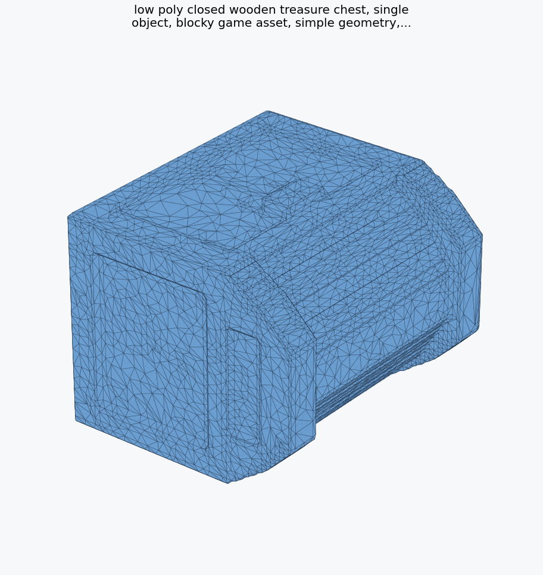
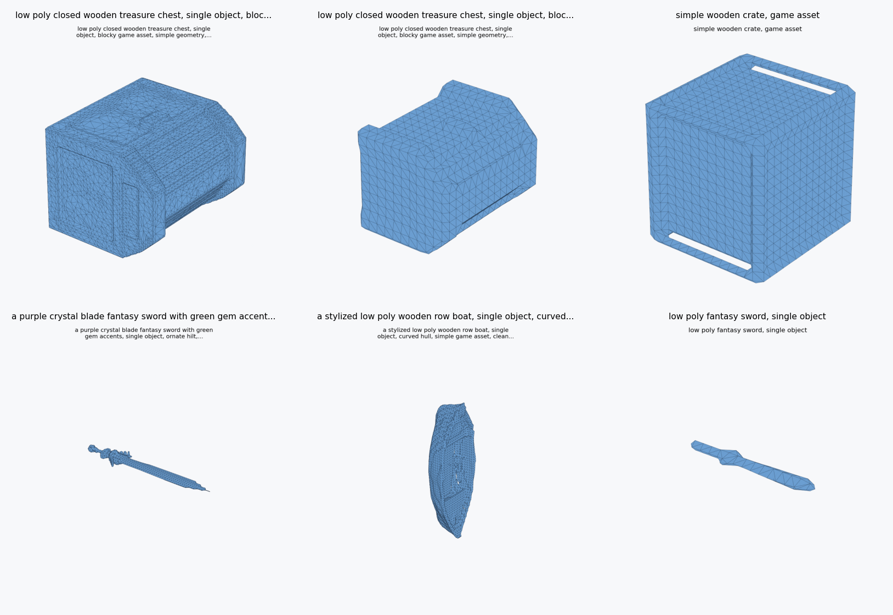
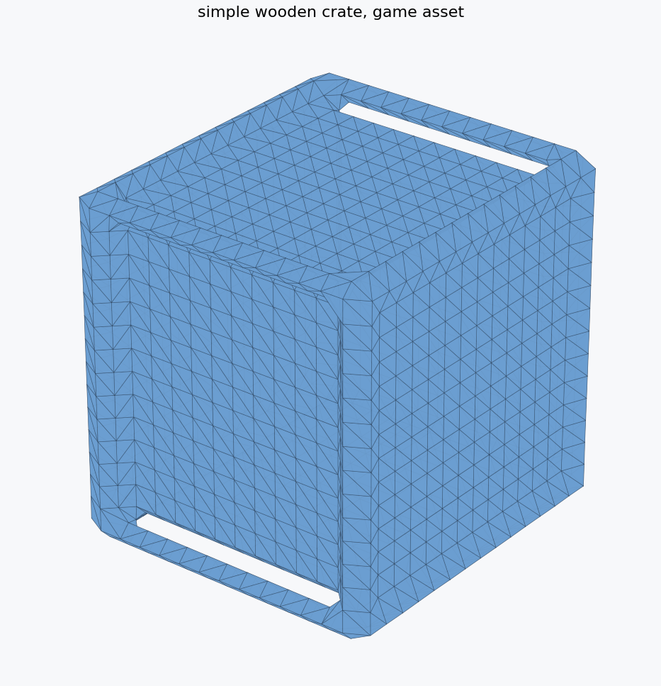
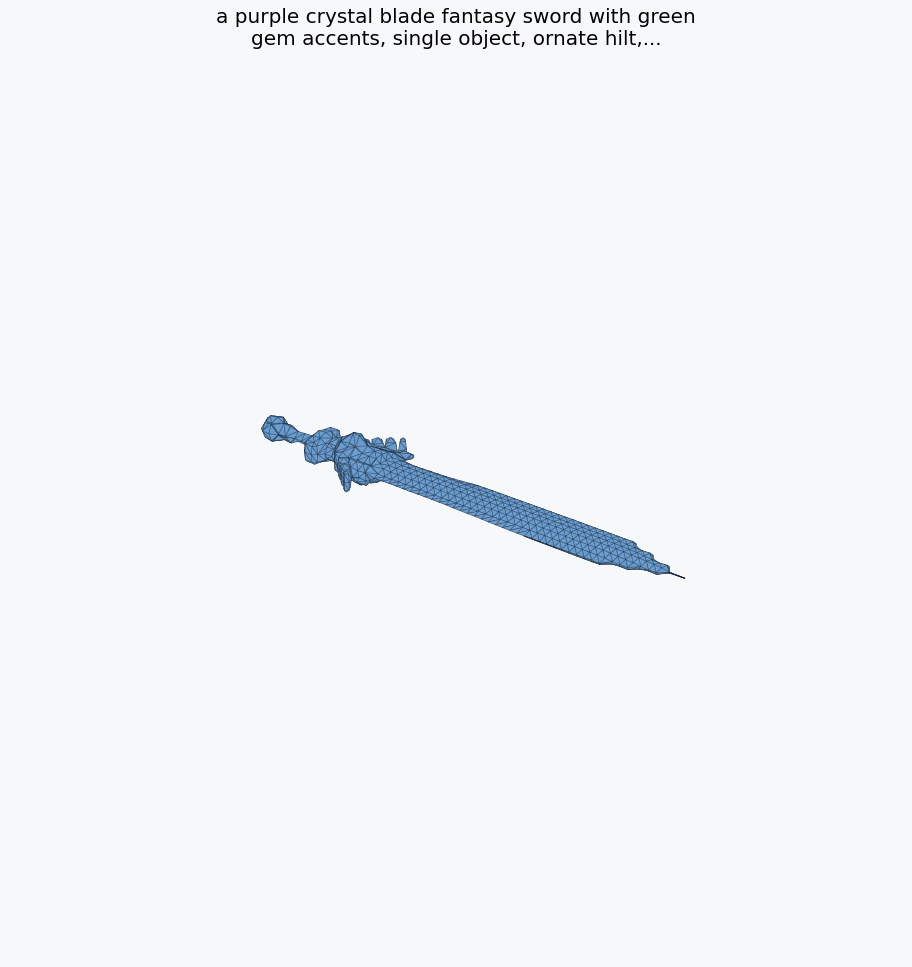
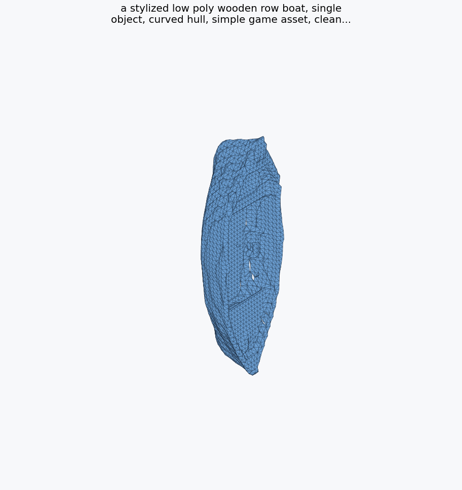

Treasure chest, 6GB Quality
Generated as a denser mesh, then simplified from 32,036 to 12,000 triangles. Readiness: 100/100.
Independent technical case study
CubeLite Studio is a local toolkit built around Roblox's open-source Cube 3D model. It focuses on consumer-GPU inference, repeatable benchmarking, mesh analysis, and Roblox-oriented export packages.
CubeLite Studio is not affiliated with, sponsored by, or endorsed by Roblox Corporation. It does not include or redistribute Cube 3D model weights. Users must obtain Cube 3D files from official sources and follow the original license.
Measured local runs
The official high-memory path ran out of CUDA memory on this 6GB laptop GPU, peaking near 5.98GB. CubeLite's staged runner completed real Cube 3D v0.5 generations by loading CLIP, GPT, and shape decoding separately.
The strongest result so far is a two-step 6GB Quality workflow: generate a denser mesh, then simplify it into a Roblox-testable export. The showcase chest started at 32,036 triangles and was reduced to 12,000 triangles with a 100/100 heuristic readiness score.

Generated examples

Generated as a denser mesh, then simplified from 32,036 to 12,000 triangles. Readiness: 100/100.

Simple, readable prop. 2,856 triangles, 3.93GB peak VRAM, readiness 92/100.

Best prompt-adherence result so far. 1,880 triangles, 4.05GB peak VRAM, readiness 100/100.

Readable hull candidate. 9,220 triangles, 4.05GB peak VRAM, readiness 100/100.
Engineering approach
Keep CLIP text encoding on CPU, run GPT token generation on GPU, unload it, then load the shape decoder.
Record generation time, peak VRAM, file size, triangle count, warnings, and failure reason.
Analyze OBJ files, simplify when available, write import notes, and package exports with metadata.
Separate showcase outputs from mixed or failed generations instead of treating every mesh as a win.
Honest limitations
Summary
CubeLite Studio lowers the barrier for local Cube 3D experimentation, gives creators clearer hardware expectations, and turns raw mesh generation into a measured Roblox import workflow.